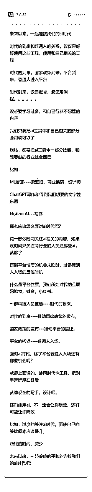
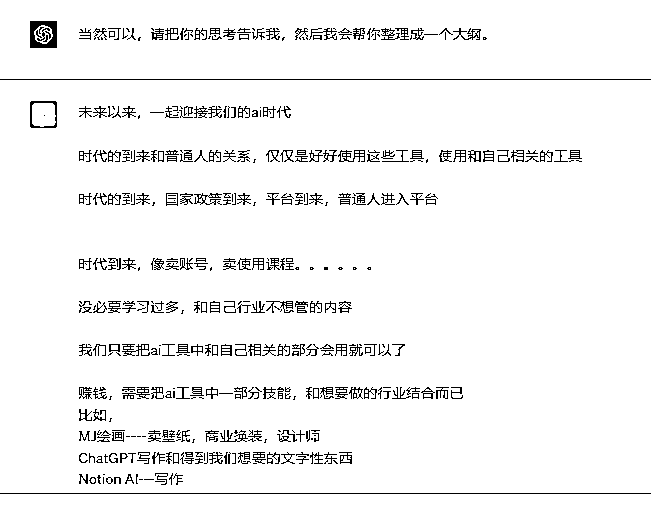
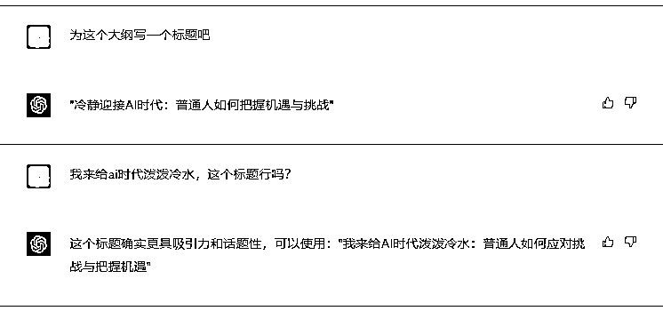
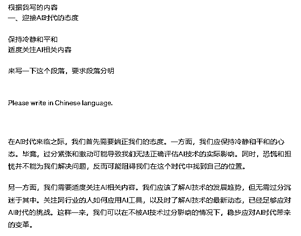

来源：https://crse5s1mvs.feishu.cn/docx/YuFvdjdZBobrLpx5FcHcjyiin5g
在AI时代来临之际，我们首先需要端正我们的态度。
过分紧张和激动可能导致我们无法正确评估AI技术的实际影响。
恐慌和担忧并不能为我们解决问题，
反而可能阻碍我们在这个时代中找到自己的位置。
我们应该了解AI技术的发展趋势，但无需过分沉迷于其中。
只需要关注同行业的人使用的什么AI工具，如何应用AI工具，
自己再了解AI技术的最新动态，发现和自己行业相关的工具抓紧用起来
已经足够应对AI时代的挑战。
这样一来，我们可以在不被AI技术过分影响的情况下，
稳步应对AI时代带来的变革。
AI时代对普通人来说，既是挑战也是机遇。
我们要学会利用AI工具提升自身的技能。例如，使用AI绘画软件来升级绘画技巧，借助ChatGPT写作工具来提高写作水平，或是运用Notion AI辅助我们更高效地完成写作任务。通过这些工具，我们可以在短时间内快速提升自己的能力，从而在激烈的竞争中脱颖而出。
同时，我们还可以利用人们头脑发热无脑冲AI的心理，赚钱，
例如卖账号，
现在有很多人有了ChatGPT账号，也不会用，
并且大部分用用就扔了。
类似的变现手段还有很多，无疑都是短期赚钱很快没了
但是将AI技术与行业相结合，以实现赚钱和创造价值，就很长远了。
在面对行业竞争时，
我们比同行更会运用AI工具来优化工作流程、提高生产效率，
就会比他们更加有优势
比如，
设计师---利用AI生成的元素来设计新颖独特的作品，
写手---通过AI写作辅助来提高创作速度和质量。
赚钱方面：
MJ绘画----卖壁纸，商业换装等等
ChatGPT---写小红书笔记等等
Notion AI---也可以写小红书笔记等等
多个ai结合做数字人，做漫画等等
AI时代的推动过程可以分为四个阶段。
首先，一群充满激情和创造力的科技人员通过不懈努力，推动了AI技术的发展。他们的成果使得我们今天可以见证AI时代的到来。
随着AI时代的到来，国家也意识到了这一技术对社会和经济的巨大影响。为了引导和规范AI技术的发展，国家纷纷制定和发布了一系列政策。这些政策旨在确保AI技术的健康发展，同时也为后续的平台搭建提供了有力支持。
在国家政策的推动下，各种AI技术相关的平台应运而生。这些平台为普通人提供了方便快捷的途径，让他们能够更容易地接触和应用AI技术。
例如，在互联网时代：淘宝、抖音、小红书等都是在不同领域的具体应用。
最后才是，普通人逐渐进入了AI时代。根据这些平台去赚取金钱，并在这个时代中找到自己的立足之地
如果有能力的话，也可以搭建平台，带领一群人赚钱
在AI时代，我们应该积极面对并采取一系列措施来应对挑战和把握机遇。
我们怎么知道什么是平台性质的机会。
如：互联网时代的淘宝、抖音、小红书等。这些平台为我们提供了便捷的途径。
他们有什么共通点呢？
把已经存在的产业和时代结合，并发展
淘宝--卖家
抖音--戏剧
现在的ChatGPT已经把AI和购物，买机票，订外卖等结合到一起了，
但是这些我们都没办法入场，等着就好了，
目前只需要充分利用这些平台，将其运用到自己的工作和生活中，以提高效率和创造价值就够了。
我们只要适时关注行业内的AI动态。
了解同行业中其他人如何运用AI技术可以帮助我们紧跟潮流，避免被竞争对手甩在身后，这就够了。
此外，关注行业内的AI动态还能让我们及时发现并抓住新的商业机会，从而在激烈的市场竞争中立于不败之地。
我们要选择与自己行业相关的AI工具。在众多AI工具中，我们应该根据自己的行业特点和需求，挑选出最适合自己的工具。例如，设计师可以使用绘画AI软件来提高设计水平，而写手则可以借助写作AI辅助工具来提高创作速度和质量。只有选择正确的工具，我们才能在AI时代中更好地发挥自己的优势和特长。
AI工具在我们的生活和工作中产生了深远的影响，这些影响既包括正面的提升效率，也包括可能的降效风险。
AI工具在很多方面都能够帮助我们提升效率。
例如，MJ绘画可以帮助我们快速生成精美的绘画作品，降低了手绘的时间成本；
ChatGPT写作工具可以在短时间内生成高质量的文本，提高我们的写作效率；
Notion AI则可以协助我们更高效地完成各种写作任务。
等等
这些工具在很大程度上提高了我们的生产力，使我们能够在有限的时间内创造更多的价值。
AI工具也存在潜在的降效风险。现在AI风潮汹涌无比
过度关注AI技术可能导致我们忽略了自己原本应该提升的技能。
例如，
做小红书，只需要掌握一种写作工具和绘画工具出图就够了
结果跑去不断测试新的AI工具，以追求更好的，
对于我们来说，有一种工具，来提高我们的效率，就已经很好了。
不断挖掘新工具，很难给我们带来营收
如果是大公司，可以安排一两个人去测试这些工具，但是对于我们普通人只需要跟着他们都可以了
就像涛哥说的，不做第一个吃螃蟹的人，做第一批吃螃蟹的人就好了啊！
在应对AI时代的过程中，我们需要采取一些策略来保持竞争力。
稍微的关注，就可以避免我们被时代的所淘汰，就像亦仁老大说的，真正重要的信息是会反复出现的
一点点注意力，就足够发现真正有价值的东西了
我们要充分利用适合自己AI工具，超越竞争对手。
在各个行业中，都有相应的AI工具可以帮助我们提升工作效率和创造力。
例如，写手可以借助AI写作工具提高文章质量和产出速度，从而在激烈的市场竞争中取得优势；
设计师则可以运用AI绘画软件生成独特的作品，使自己的设计更具竞争力。
只有充分利用AI工具，我们才能在竞争激烈的AI时代中脱颖而出。
以提高效率为目的的选择工具，而不是一定要使用所有的工具
以上内容仅为个人的思考+ChatGPT创作，可参考价值，自己酌情判断
我用的是涛哥推荐的Effie，下面是我写的内容。内容可以说非常杂乱，无序
（想不到也可以用ChatGPT查）

先给文章一个模板，原本打算用生财的精华帖模板的，它不知道生财，就用的公众号模板

我感觉它写的标题不太好，就随便写了下，它就把整个标题完善了


根据我写的内容
一、迎接AI时代的态度
保持冷静和平和
适度关注AI相关内容
来写一下这个段落，要求段落分明
Please write in Chinese language.
这一步，我做的比较简单，只是简单的改了一点，听靠谱姐说：这个可以带入人的场景化，就可以共情，
这篇文章创作于4月27号，已经过去将近1个月了，我也没把它完善，并且最近ai出现的冲击力，关注这个的应该已经麻了，并且越来越麻！！在5月17号就把它改成怎么用ChatGPT写文章的了！
AI可以让有想法的人，把想法快速成型，（非常非常害羞的说一句：我感觉我的想法还行）
说实话，当时写的时候就感觉谈论ai，这种话题太大，
根本不是我这种小人物应该思考和讨论的，
内容也只是自己突然间的警醒，
然后就随手记了点东西，
然后ChatGPT就帮我搞成文章了，
从突然的警醒到出文，仅仅花两个小时，
我感觉质量还是挺好的！
ai+使用场景，我感觉可以关注一下下